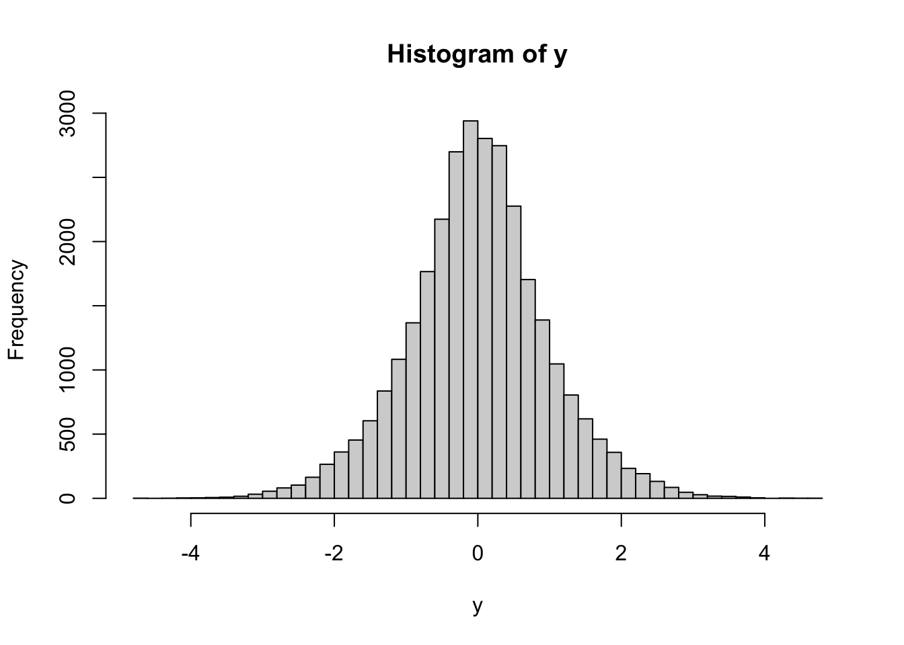
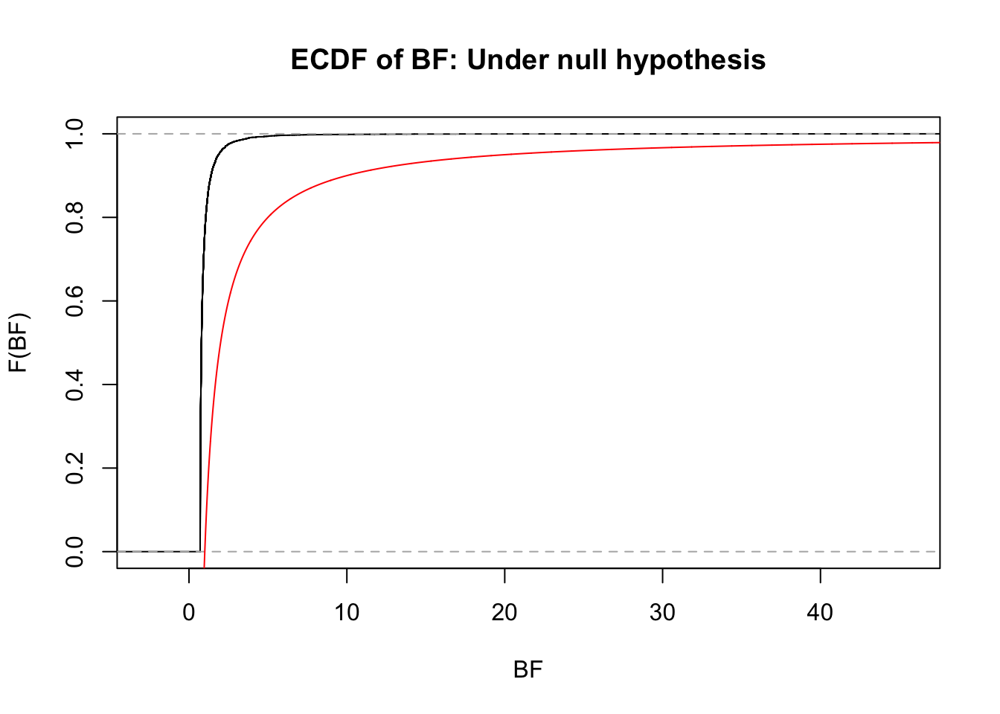

Last updated: 2025-04-23
Checks: 7 0
Knit directory: FASHresultsummary/
This reproducible R Markdown analysis was created with workflowr (version 1.7.1). The Checks tab describes the reproducibility checks that were applied when the results were created. The Past versions tab lists the development history.
Great! Since the R Markdown file has been committed to the Git repository, you know the exact version of the code that produced these results.
Great job! The global environment was empty. Objects defined in the global environment can affect the analysis in your R Markdown file in unknown ways. For reproduciblity it’s best to always run the code in an empty environment.
The command set.seed(20240507) was run prior to running
the code in the R Markdown file. Setting a seed ensures that any results
that rely on randomness, e.g. subsampling or permutations, are
reproducible.
Great job! Recording the operating system, R version, and package versions is critical for reproducibility.
Nice! There were no cached chunks for this analysis, so you can be confident that you successfully produced the results during this run.
Great job! Using relative paths to the files within your workflowr project makes it easier to run your code on other machines.
Great! You are using Git for version control. Tracking code development and connecting the code version to the results is critical for reproducibility.
The results in this page were generated with repository version d4fe486. See the Past versions tab to see a history of the changes made to the R Markdown and HTML files.
Note that you need to be careful to ensure that all relevant files for
the analysis have been committed to Git prior to generating the results
(you can use wflow_publish or
wflow_git_commit). workflowr only checks the R Markdown
file, but you know if there are other scripts or data files that it
depends on. Below is the status of the Git repository when the results
were generated:
Ignored files:
Ignored: .DS_Store
Ignored: .Rhistory
Ignored: .Rproj.user/
Ignored: analysis/.DS_Store
Ignored: analysis/.Rhistory
Ignored: code/.DS_Store
Ignored: code/.Rhistory
Ignored: code/cpp/.DS_Store
Ignored: code/function/.DS_Store
Ignored: data/.DS_Store
Ignored: data/Iyer/.DS_Store
Ignored: data/expression_data/.DS_Store
Ignored: output/.DS_Store
Ignored: output/Iyer/.DS_Store
Ignored: output/example/.DS_Store
Ignored: output/example/figure/
Ignored: output/expression/.DS_Store
Ignored: output/simulation_pollution/.DS_Store
Ignored: output/simulation_pollution/figure/
Ignored: output/vQTL_correlated/
Ignored: thought_process
Untracked files:
Untracked: analysis/explore_mom_mle.Rmd
Untracked: code/dynamic_eQTL_real/
Untracked: data/dynamic_eQTL_real/
Untracked: lfsr_most_robust.R
Untracked: mle_favor_alternative.R
Untracked: output/dynamic_eQTL_real/
Untracked: output/simulation_dynamic_eQTL/classify_dyn_eQTLs_early.RData
Untracked: output/simulation_dynamic_eQTL/classify_dyn_eQTLs_late.RData
Untracked: output/simulation_dynamic_eQTL/classify_dyn_eQTLs_middle.RData
Untracked: output/simulation_dynamic_eQTL/classify_dyn_eQTLs_switch.RData
Untracked: output/simulation_dynamic_eQTL/classify_nonlin_dyn_eQTLs_early.RData
Untracked: output/simulation_dynamic_eQTL/classify_nonlin_dyn_eQTLs_late.RData
Untracked: output/simulation_dynamic_eQTL/classify_nonlin_dyn_eQTLs_middle.RData
Untracked: output/simulation_dynamic_eQTL/classify_nonlin_dyn_eQTLs_switch.RData
Untracked: output/simulation_dynamic_eQTL/min_lfsr_summary2.RData
Untracked: overdispersion_is_important.R
Untracked: pi0est.R
Untracked: study_BF.R
Unstaged changes:
Modified: analysis/_site.yml
Modified: analysis/nonlinear_dynamic_eQTL_real.rmd
Modified: code/function/functions_simulating.R
Modified: code/function/functions_simulation.R
Modified: code/function/functions_simulation_eQTL_test.R
Modified: output/simulation_dynamic_eQTL/fash_fit_1.RData
Modified: output/simulation_dynamic_eQTL/fash_fit_1_noisy.RData
Modified: output/simulation_dynamic_eQTL/fash_fit_2.RData
Modified: output/simulation_dynamic_eQTL/fash_fit_2_noisy.RData
Modified: output/simulation_dynamic_eQTL/fash_fit_2_noisy_pen.RData
Note that any generated files, e.g. HTML, png, CSS, etc., are not included in this status report because it is ok for generated content to have uncommitted changes.
These are the previous versions of the repository in which changes were
made to the R Markdown (analysis/BF_based_control.rmd) and
HTML (docs/BF_based_control.html) files. If you’ve
configured a remote Git repository (see ?wflow_git_remote),
click on the hyperlinks in the table below to view the files as they
were in that past version.
| File | Version | Author | Date | Message |
|---|---|---|---|---|
| Rmd | d4fe486 | Ziang Zhang | 2025-04-23 | workflowr::wflow_publish("analysis/BF_based_control.rmd") |
| html | 563b779 | Ziang Zhang | 2025-04-07 | Build site. |
| Rmd | e487b3f | Ziang Zhang | 2025-04-07 | workflowr::wflow_publish("analysis/BF_based_control.rmd") |
Given a \(L\) matrix of size \(N \times (K + 1)\), we first collapse this matrix into a \(N \times 2\) matrix \(L^c\) through the following procedure:
Then, we can compute the Bayes factor for each row of \(L^c\) as: \[\text{BF}_i = L^c_{i0}/L^c_{i1}.\]
Write a function for this:
collapse_L <- function(L, log = F) {
if (ncol(L) > 1) {
pi_hat_star <- mixsqp::mixsqp(L = L,
log = log,
control = list(verbose = FALSE))$x[-1]
pi_hat_star <- pi_hat_star / sum(pi_hat_star)
} else{
pi_hat_star <- rep(1, nrows(L))
}
L_c <- matrix(0, nrow = nrow(L), ncol = 2)
L_c[, 1] <- L[, 1]
L_c[, 2] <- (L[, -1, drop = FALSE] %*% pi_hat_star)
return(L_c)
}The BF based control procedure is as follows:
Let’s write a function for this:
BF_control <- function(BF, plot = T) {
BF_sorted <- sort(BF, decreasing = F)
mu <- numeric(length(BF_sorted))
pi0_hat <- numeric(length(BF_sorted))
mu <- cumsum(BF_sorted) / seq_along(BF_sorted)
pi0_hat <- seq_along(BF_sorted) / length(BF_sorted)
if (max(mu) < 1) {
pi0_hat_star <- 1
return(list(mu = mu, pi0_hat = pi0_hat, pi0_hat_star = pi0_hat_star))
}else{
pi0_hat_star <- pi0_hat[mu >= 1][1]
}
if (plot) {
par(mfrow = c(1, 2))
hist(log(BF_sorted), breaks = 100, freq = T, xlab = "log-BF", main = "Histogram of log-BF")
abline(v = log(BF_sorted)[mu >= 1][1], col = "red")
plot(pi0_hat, mu, type = "l", xlab = "est pi0", ylab = "E(BF | BF <= c)", xlim=c(0,1), ylim = c(0,3))
abline(h = 1, col = "red")
par(mfrow = c(1, 1))
}
return(list(mu = mu, pi0_hat = pi0_hat, pi0_hat_star = pi0_hat_star))
}set.seed(1234)
## simulate n observation from mixture of two normal distributions
n <- 30000
# Specify the true alternative hypothesis of N(0, true_sd)
true_sd <- 1
pi0_true <- 0.3
x <- c(rep(0, ceiling(n*pi0_true)), rnorm(n = ceiling(n*(1-pi0_true)), mean = 0, sd = true_sd))
## simulate y based on x
sebetahat <- 0.5
y <- x + rnorm(n, mean = 0, sd = sebetahat)
hist(y, breaks = 50)
| Version | Author | Date |
|---|---|---|
| 563b779 | Ziang Zhang | 2025-04-07 |
## fit ash with a fitted alternative hypothesis of N(0, fit_sd)
fit_sd <- c(0.1,0.3,0.5)
ash_fit <- ashr::ash(betahat = y, sebetahat = sebetahat, mixcompdist = "normal", mixsd = fit_sd, nullweight = 1, outputlevel = 3)
ash_fit$fitted_g$pi[1][1] 0L_mat <- ash_fit$fit_details$matrix_lik
L_c <- collapse_L(L_mat)
BF <- L_c[, 2] / L_c[, 1]
pi0_hat_star <- BF_control(BF)pi0_hat_star$pi0_hat_star[1] 0.7618BF1 <- BF[1:(pi0_true*n)]
# ECDF of BF1
plot(ecdf(BF1), xlab = "BF", ylab = "F(BF)", main = "ECDF of BF: Under null hypothesis")
# Plot Markov Bound
markov_bound <- 1 - 1/seq(0, 200, by = 0.01)
lines(y = markov_bound, x = seq(0, 200, by = 0.01), col = "red")
| Version | Author | Date |
|---|---|---|
| 563b779 | Ziang Zhang | 2025-04-07 |
Let’s see why the BF-based control gives conservative estimate of \(\pi_0\).
Assume we have \(N\) independent observations, with \(N_0\) from the null hypothesis and \(N_1\) from the alternative hypothesis.
We say \(i\in H_0\), if the \(i\)th observation is from the null, and \(i\in H_1\), if the \(i\)th observation is from the alternative.
If \(N\) is large, we know approximately (by LLN) that: \[\pi_0 = N_0/N.\] We also know by LLN that if \(H_0\) is correctly specified, then (approximately) \[\frac{\sum_{i \in H_0} \text{BF}_i}{N_0} = 1.\]
Let \({\tilde{N}_0}\) be the number of observations that are below the cutoff \(c^*\), and \(\tilde{H}_0\) be the set of indices such that \(\text{BF}_i \leq c^*\). Similarly, let \(\tilde{N}_1\) be the number of observations that are above the cutoff \(c^*\), and \(\tilde{H}_1\) be the set of indices such that \(\text{BF}_i > c^*\).
By construction we know \[\frac{\sum_{i \in \tilde{H}_0} \text{BF}_i}{\tilde{N}_0} \geq 1.\]
The claim we try to prove is: \[\tilde{N}_0 \geq N_0.\]
To see this, denote \(N_{l,j} = |H_l \cap \tilde{H}_j^C|\) where \(l,j \in \{0,1\}\). It is clear that \(N_{0,1} + N_{0,0} = N_0\), and \(N_{1,0} + N_{0,0} = \tilde{N}_0\).
Hence \(\hat{\pi}_0 = \frac{N_{0,0} + N_{1,0}}{N}\) and \(\pi_0 = \frac{N_{0,0} + N_{0,1}}{N}\), and we just need to show that \(N_{1,0} \geq N_{0,1}\).
Using the fact that \(\frac{\sum_{i \in H_0} \text{BF}_i}{N_0} = 1\), it is clear that: \[ \frac{c^* N_{0,1} + \sum_{i \in H_0 \cap \tilde{H}_0} \text{BF}_i}{N_{0,1} + N_{0,0}} \leq \frac{\sum_{i \in H_0 \cap \tilde{H}_0^C} \text{BF}_i + \sum_{i \in H_0 \cap \tilde{H}_0} \text{BF}_i}{N_{0,1} + N_{0,0}} = \frac{\sum_{i \in H_0} \text{BF}_i}{N_{0,1} + N_{0,0}} = 1. \]
Then using the fact that \(\frac{\sum_{i \in \tilde{H}_0} \text{BF}_i}{\tilde{N}_0} \geq 1\), we can also show that: \[ 1 \leq \frac{\sum_{i\in H_0^C \cap \tilde{H}_0} \text{BF}_i + \sum_{i\in H_0 \cap \tilde{H}_0} \text{BF}_i}{N_{1,0} + N_{0,0}} \leq \frac{c^* N_{1,0} + \sum_{i\in H_0 \cap \tilde{H}_0} \text{BF}_i}{N_{1,0} + N_{0,0}} . \]
Therefore, we know: \[ \frac{c^* N_{0,1} + \sum_{i \in H_0 \cap \tilde{H}_0} \text{BF}_i}{N_{0,1} + N_{0,0}} \leq 1 \leq \frac{c^* N_{1,0} + \sum_{i\in H_0 \cap \tilde{H}_0} \text{BF}_i}{N_{1,0} + N_{0,0}}. \]
Define a function \[f(x) = \frac{c^*x + \sum_{i \in H_0 \cap \tilde{H}_0} \text{BF}_i}{x + N_{0,0}}.\]
It is clear that \[f'(x) = \frac{c^* N_{0,0} - \sum_{i \in H_0 \cap \tilde{H}_0} \text{BF}_i}{(x + N_{0,0})^2}.\]
Since \(\sum_{i \in H_0 \cap \tilde{H}_0} \text{BF}_i \leq c^* N_{0,0}\), we know that \(f'(x) \geq 0\) for all \(x\geq 0\).
Therefore, we know that \(f(x)\) is increasing in \(x\). Hence \(N_{1,0} \geq N_{0,1}\), and \(\hat{\pi}_0 = (N_{1,0} + N_{0,0})/N \geq (N_{0,1} + N_{0,0})/N =\pi_0\).
sessionInfo()R version 4.3.1 (2023-06-16)
Platform: aarch64-apple-darwin20 (64-bit)
Running under: macOS Monterey 12.7.4
Matrix products: default
BLAS: /Library/Frameworks/R.framework/Versions/4.3-arm64/Resources/lib/libRblas.0.dylib
LAPACK: /Library/Frameworks/R.framework/Versions/4.3-arm64/Resources/lib/libRlapack.dylib; LAPACK version 3.11.0
locale:
[1] en_US.UTF-8/en_US.UTF-8/en_US.UTF-8/C/en_US.UTF-8/en_US.UTF-8
time zone: America/Chicago
tzcode source: internal
attached base packages:
[1] stats graphics grDevices utils datasets methods base
other attached packages:
[1] workflowr_1.7.1
loaded via a namespace (and not attached):
[1] Matrix_1.6-4 jsonlite_1.8.9 highr_0.11 compiler_4.3.1
[5] promises_1.3.0 Rcpp_1.0.13-1 stringr_1.5.1 git2r_0.33.0
[9] callr_3.7.6 later_1.3.2 jquerylib_0.1.4 yaml_2.3.10
[13] fastmap_1.2.0 lattice_0.22-6 R6_2.5.1 mixsqp_0.3-54
[17] knitr_1.48 tibble_3.2.1 rprojroot_2.0.4 bslib_0.8.0
[21] pillar_1.9.0 rlang_1.1.4 utf8_1.2.4 SQUAREM_2021.1
[25] cachem_1.1.0 stringi_1.8.4 httpuv_1.6.15 xfun_0.48
[29] getPass_0.2-4 fs_1.6.4 sass_0.4.9 invgamma_1.1
[33] truncnorm_1.0-9 cli_3.6.3 magrittr_2.0.3 ps_1.8.0
[37] grid_4.3.1 digest_0.6.37 processx_3.8.4 irlba_2.3.5.1
[41] rstudioapi_0.16.0 lifecycle_1.0.4 vctrs_0.6.5 evaluate_1.0.1
[45] glue_1.8.0 whisker_0.4.1 fansi_1.0.6 ashr_2.2-66
[49] rmarkdown_2.28 httr_1.4.7 tools_4.3.1 pkgconfig_2.0.3
[53] htmltools_0.5.8.1